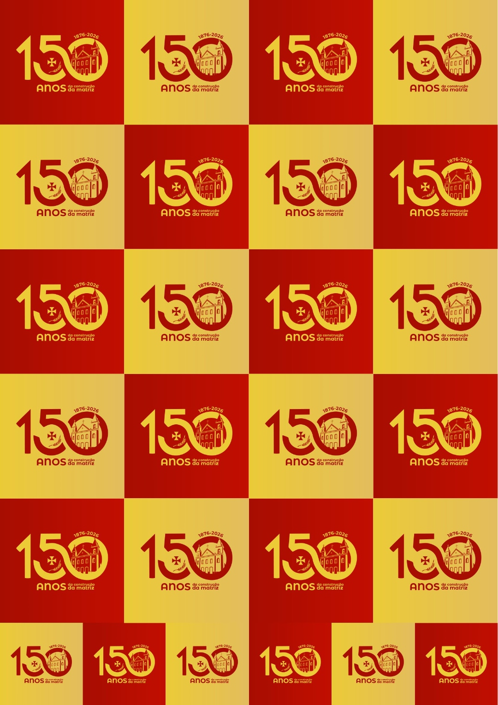
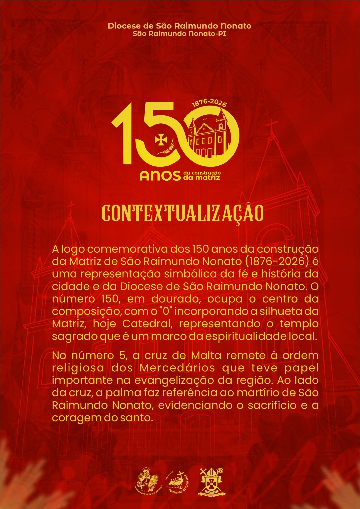
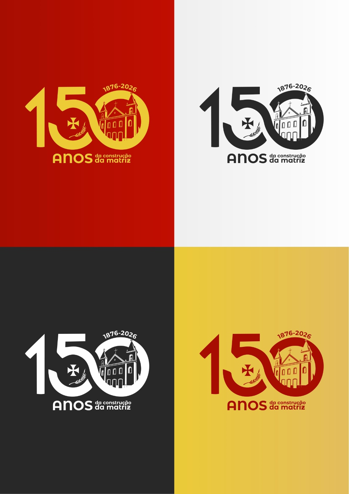
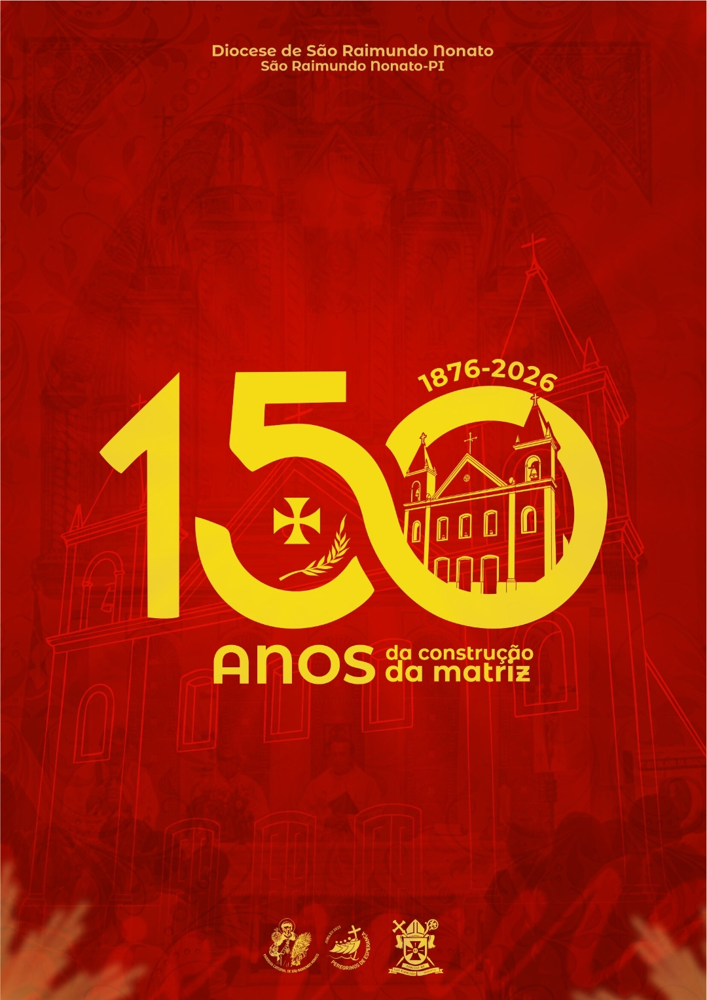

Fé, História e Devoção
Fé, História e Devoção
Fé, História e Devoção
Fé, História e Devoção
Uma celebração de fé, memória e devoção. Há um século e meio, a Matriz de São Raimundo Nonato acompanha a vida do povo sertanejo como símbolo espiritual, cultural e histórico da cidade de São Raimundo Nonato.
A Matriz de São Raimundo Nonato permanece como um dos maiores símbolos religiosos e históricos do sertão piauiense, preservando memórias de gerações.
Um patrimônio espiritual e cultural construído ao longo de gerações.
A Matriz de São Raimundo Nonato acompanha a formação histórica da cidade e tornou-se símbolo de identidade, devoção e encontro comunitário para o povo sertanejo.
A Cruz de Malta remete à tradição mercedária, enquanto a palma do martírio recorda a fidelidade cristã. Ao longo de 150 anos, a Matriz permanece como referência espiritual da Diocese.
Celebrações, cultura e memória reunidas no jubileu dos 150 anos.
Evento esportivo celebrando os 150 anos da construção da Matriz.
Link de inscrição →Fotografias, documentos e memórias da vida da comunidade paroquial.
Saiba mais →Sua colaboração ajuda a preservar este patrimônio religioso e histórico para futuras gerações.
Utilize a chave PIX abaixo para contribuir:
 Aponte a câmera do celular para pagar diretamente
Aponte a câmera do celular para pagar diretamente
Atenção: verifique sempre o nome do destinatário antes de confirmar o pagamento. Banco do Brasil · Agência 2660-3 · Conta 71500-0 · CNPJ 06.822.142/0003-82.
Oração comemorativo oficial da Diocese de São Raimundo Nonato.
Pai Santo, na celebração dos 150 anos da construção da Igreja Matriz de São Raimundo Nonato, nós, vossos filhos e filhas, vos louvamos e agradecemos por suscitar a fé, fortalecer a esperança e alimentar a devoção daqueles que construíram este templo físico e a Igreja, Povo de Deus, através da evangelização e da catequese.
Pai de bondade, vos bendizemos por este templo e por cada oração aqui elevada, por cada gesto de amor manifestado e por cada Sacramento celebrado neste lugar sagrado. Aqui, vossos filhos e filhas foram alimentados na escuta da Boa Nova do vosso dileto Filho, Palavra encarnada e Pão da vida partilhado, em cada celebração litúrgica.
Pai de ternura, nós vos suplicamos: olhai com amor e misericórdia os sacerdotes, os diáconos, os religiosos(as) e os leigos(as) que, nesta Igreja, serviram com entusiasmo e dedicação ao longo destes 150 anos e, acolhei na Jerusalém celeste, os que já partiram.
Renovai em nós, Senhor, o ardor missionário e enviai o Vosso Espírito consolador e santificador para que esta Igreja continue sendo testemunha de Vossa presença e lugar do acolhimento, da vivência do amor e da fraternidade, da justiça e da solidariedade.
Que a Virgem Maria, a Senhora das Mercês, e o querido São Raimundo Nonato, nosso Padroeiro, intercedam por nós, para que possamos celebrar com gratidão o passado, com fé e ardor o presente e com esperança e ousadia o futuro que virá, sendo “sal da terra e luz no mundo”. Amém.
Uma história que também é sua: cuidar, preservar e valorizar a Catedral/Matriz de São Raimundo Nonato.
A Catedral de São Raimundo Nonato não é apenas um lugar. É onde a fé ganhou forma, onde vidas se encontraram e onde nossa comunidade se reconhece.
Cada gesto, cada presença, cada memória construída aqui faz parte de algo maior. E essa história continua com você. Cada contribuição é um gesto concreto de cuidado com a nossa Catedral.
As doações são espontâneas, nascem do coração de quem reconhece o valor desta história. Como forma de agradecimento, a cada R$ 50,00 doados, o participante estará concorrendo a um televisor.
Registros históricos e celebrações da comunidade.



